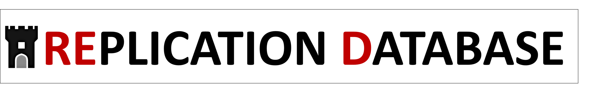

Research
My research covers Replications, Meta-Science, and Judgment and Decision Making (e.g., Anchoring Effects).
Ongoing project: FORRT Replication Database (FReD)

Ongoing project: Interdisciplinary Journal for Replication Research
 Together with an interdisciplinary team of Open Science experts, I am creating the diamond open access journal Replication Research (R2). Get in touch if you seek for ways to publish replication research or if you want to support reproductions and replications.
Together with an interdisciplinary team of Open Science experts, I am creating the diamond open access journal Replication Research (R2). Get in touch if you seek for ways to publish replication research or if you want to support reproductions and replications.
Open educational resources
Together with a team of experts, I have published an open access handbook for reproduction and replication studies: https://forrt.org/replication_handbook
I have been writing a German book on Open Science, which is available online.
I upload most slides and materials from my workshops, lectures, talks, and seminars to this OSF repository: https://osf.io/at29b/
Together with experts from the University of Münster’s psychology open science commission, I have been preparing an interdisciplinary guide to Open Science (German, WIP): https://lukasroeseler.github.io/MueCOS-Infomodule/
Research articles (peer-reviewed)
Röseler, L., Incerti, L., Rebholz, T. R., Seida, C., & Papenmeier, F. (2025). Falsifying the insufficient adjustment model: No evidence for unidirectional adjustment from anchors. Meta-Psychology, 9. https://doi.org/10.15626/MP.2024.4137
Reed, W. R., Röseler, L., Saam, M., & Wallrich, L. (2025). No Room at the Inn? The Case for Dedicated Replication Journals. Journal of Behavioral and Experimental Economics, 102502. https://doi.org/10.1016/j.socec.2025.102502
Hoghe, J., Röseler, L., Limmer, R., Walther, C., & Schütz, A. (2025). Die Bedeutung personaler Ressourcen und personaler Risikofaktoren für die Bewältigung beruflicher Belastungen bei Genesungsbegleiter/-innen/Peer Berater/-innen. In Zeitschrift für Arbeitswissenschaft. https://doi.org/10.1007/s41449-025-00460-x
Weber, L., & Röseler, L. (2025). Testing the Reliability of Anchoring Susceptibility Scores. Europe’s Journal of Psychology, 21(1), 1-10. https://doi.org/10.5964/ejop.9891
Röseler, L., Weber, L., Helgerth, K. A., Stich, E., Günther, M., Tegethoff, P., Wagner, F., & Schütz, A. (2024). Measurements of Susceptibility to Anchoring are Unreliable: Meta-Analytic Evidence From More Than 50,000 Anchored Estimates. Meta-Psychology, 8. https://doi.org/10.15626/MP.2022.3236
Hoghe, J., Röseler, L., Limmer, R., Walther, C., & Schütz, A. (2024). Berufliche Stressoren und Ressourcen von Genesungsbegleiter* innen/Peer-Berater* innen in der Sozialpsychiatrie. Psychiatrische Praxis. https://doi.org/10.1055/a-2383-8057
Röseler, L., Bögler, H. L., Koßmann, L., Krueger, S., Bickenbach, S., Bühler, R., della Guardia, J., Köppel, L.-M. A, Möhring, J., Ponader, S., Roßmaier, K., Sing, J. (2024). Need for Cognition, Cognitive Load, and Forewarning do not Moderate Anchoring Effects. A Replication Study of Epley & Gilovich (Journal of Behavioral Decision Making, 2005; Psychological Science, 2006). Journal of Comments and Replications in Economics, 3(2024-6). https://doi.org/10.18718/81781.38
Röseler, L., Kaiser, L., Doetsch, C., Klett, N., Seida, C., Schütz, A., Aczel, B., Adelina, N., Agostini, V., Alarie, S., Albayrak-Aydemir, N., Aldoh, A., Al-Hoorie, A. H., Azevedo, F., Baker, B. J., Barth, C. L., Beitner, J., Brick, C., Brohmer, H., Chandrashekar, S. P., Chung, K. L., Cockcroft, J. P., Cummins, J., Diveica, V., Dumbalska, T., Efendic, E., Elsherif, M., Evans, T., Feldman, G., Fillon, A., Förster, N., Frese, J., Genschow, O., Giannouli, V., Gjoneska, B., Gnambs, T., Gourdon-Kanhukamwe, A., Graham, C. J., Hartmann, H., Haviva, C., Herderich, A., Hilbert, L. P., Holgado, D., Hussey, I., Ilchovska, Z. G., Kalandadze, T., Karhulahti, V.-M., Kasseckert, L., Klingelhöfer-Jens, M., Koppold, A., Korbmacher, M., Kulke, L., Kuper, N., LaPlume, A., Leech, G., Lohkamp, F., Lou, N. M., Lynott, D., Maier, M., Meier, M., Montefinese, M., Moreau, D., Mrkva, K., Nemcova, M., Oomen, D., Packheiser, J., Pandey, S., Papenmeier, F., Paruzel-Czachura, M., Pavlov, Y. G., Pavlović, Z., Pennington, C. R., Pittelkow, M.-M., Plomp, W., Plonski, P. E., Pronizius, E., Pua, A. A., Pypno-Blajda, K., Rausch, M., Rebholz, T. R., Richert, E., Röer, J. P., Ross, R., Schmidt, K., Skvortsova, A., Sperl, M. F. J., Tan, A. W. M., Thürmer, J. L., Tołopiło, A., Vanpaemel, W., Vaughn, L. A., Verheyen, S., Wallrich, L., Weber, L., Wolska, J. K., Zaneva, M., & Zhang, Y. (2024). The Replication Database: Documenting the Replicability of Psychological Science.
Journal of Open Psychology Data, 12: 8, pp. 1–23. DOI: https://doi.org/10.5334/jopd.101Röseler, L., Felser, G., Asberger, J., & Schütz, A. (2024). The Effect of Variety on Perceived Quantity: Failures to Replicate Redden and Hoch (2009). Meta-Psychology, 8. https://doi.org/10.15626/MP.2020.2639
Röseler, L., Weber, L., Helgerth, K., Stich, E., Günther, M., Tegethoff, P., Wagner, F. S., Ambrus, E., Antunovic, M., Barrera-Lemarchand, F., Halali, E., Ioannidis, K., Genschow, O., McKay, R., Milstein, N., Molden, D. C., Papenmeier, F., Pavlovic, Z., Rinn, R., Schreiter, M. L., Zimdahl, M. F., Allen, E., Bahník, Š., Bermeitinger, C., Blower, F. B. N., Bögler, H. L., Burgmer, P., Cheek, N. N., Dorsch, L., Fels, S. A., Frech, M.-L., Freira, L., Harris, A. J. L., Hartig, B., Häusser, J. A., Hedgebeth, M. V., Henkel, M., Horvath, D., Imhoff, R., Intelmann, P., Klamar, A., Knappe, E., Köppel, L.-M., Krueger, S. M., Lagator, S., López Bóo, F., Navajas, J., Norem, J. K., Novak, J., Onuki, Y., Page, E., Pearton, J., Ponader, S., Rebholz, T. R., Rostekova, A., Sartorio, M., Schindler, S., Seida, C., Shanks, D. R., Siems, M.-C., Speekenbrink, M., Stäglich, P., Starkulla, M., Stitz, M., Straube, T., Thies, K., Thum, E., Ueda, K., Undorf, M., Urlichich, D., Vadillo, M. A., Wolf, H., Zhou, A., & Schütz, A. (2024). Correction: The Open Anchoring Quest Dataset: Anchored Estimates from 96 Studies on Anchoring Effects. Journal of Open Psychology Data, 12: 8, pp. 1–3. https://doi.org/10.5334/jopd.92
Adler, S. J., Röseler, L., & Schöniger, M. K. (2023). A toolbox to evaluate the trustworthiness of published findings. Journal of Business Research, 167, 114189. https://doi.org/10.1016/j.jbusres.2023.114189
Röseler, L., Weber, L., Helgerth, K., Stich, E., Günther, M., Tegethoff, P., Wagner, F., Antunovic, M., BarreraLemarchand, F., Halali, E., Ioannidis, K., Genschow, O., Milstein, N., Molden, D. C., Papenmeier, F., Pavlovic, Z., Rinn, R., Schreiter, M. L., Zimdahl, M. F., Bahník, Š., Bermeitinger, C., Blower, F. B. N., Bögler, H. L., Burgmer, P., Cheek, N. N., Dorsch, L., Fels, S., Frech, M.-L., Freira, L., Harris, A. J. L., Häusser, J. A., Hedgebeth, M. V., Henkel, M., Horvath, D., Intelmann, P., Klamar, A., Knappe, E., Köppel, L.-M., Krueger, S. M., Lagator, S., Lopez-Boo, F., Navajas, J., Norem, J. K., Novak, J., Onuki, Y., Page, E., Rebholz, T. R., Sartorio, M., Schindler, S., Shanks, D. R., Siems, M.-C., Stäglich, P., Starkulla, M., Stitz, M., Straube, T., Thies, K., Thum, E., Ueda, K., Undorf, M., Urlichich, D., Vadillo, M. A., Wolf, H., Zhou, A., & Schütz, A. (2022). The Open Anchoring Quest Dataset: Anchored Estimates from 96 Studies on Anchoring Effects. Journal of Open Psychology Data, 10(16), pp. 1–12. http://doi.org/10.5334/jopd.67
Delios, A., Clemente, E., Wu, T., Tan, H., Wang, Y., Gordon, M., Viganola, D., Chen, Z., Dreber, A., Johannesson, M., Pfeiffer, T., Generalizability Tests Forecasting Collaboration, & Uhlmann, E.L. (2022). Examining the context sensitivity of research findings from archival data. Proceedings of the National Academy of Sciences. https://doi.org/10.1073/pnas.212037711
Körner*, R., Röseler*, L., Schütz, A., & Bushman, B. J. (2022). Dominance and prestige: Meta-analytic review of experimentally induced body position effects on behavioral, self-report, and physiological dependent variables.Psychological Bulletin, 148(1-2), 67–85. https://doi.org/10.1037/bul0000356 *shared first authorship
Wolf, D., Leder, J., Röseler, L., & Schütz, A. (2021). Does Facial Redness Really Affect Emotion Perception? Evidence for Limited Generalisability of Effects of Facial Redness on Emotion Perception in a Large Sample. Cognition and Emotion. 35(8), 1607–1617. https://doi.org/10.1080/02699931.2021.1979473
Röseler, L., Schütz, A., Blank, P. A., Dück, M., Fels, S., Kupfer, J., Scheelje, L., & Seida, C. (2021). Evidence against subliminal anchoring: Two close, highly powered, preregistered, and failed replication attempts. Journal of Experimental Social Psychology, 92, 104066. https://doi.org/10.1016/j.jesp.2020.104066
Röseler, L., Ebert, J., Schütz, A., & Baumeister, R. F. (2021). The upsides and downsides of high self-control: Evidence for effects of similarity and situation dependency. Europe’s Journal of Psychology, 17(1), 1–16. https://doi.org/10.5964/ejop.2639
Körner, R., Röseler, L., & Schütz, A. (2021). Commentary on Elkjær et al.’s (2020) meta-analysis on expansive versus contractive nonverbal displays.Perspectives on Psychological Science, 17(1), 305–307. https://doi.org/10.1177/1745691620984474
Tierney, W., Hardy, J. H., III., Ebersole, C., Viganola, D., Clemente, E., Gordon, M., Hoogeveen, S., Haaf, J., Dreber, A.A., Johannesson, M., Pfeiffer, T., Chapman, H., Gantman, A., Vanaman, M., DeMarree, K., Igou, E., Wylie, J., Storbeck J., Andreychik, M.R., McPhetres, J., Vaughn, L.A., … Röseler, L., …Uhlmann, E. L.(2021). A creative destruction approach to replication: Implicit work and sex morality across cultures. Journal of Experimental Social Psychology, 93, 104060. https://doi.org/10.1016/j.jesp.2020.104060
Röseler, L., Schütz, A., Baumeister, R. F., & Starker, U. (2020). Does ego depletion reduce judgment adjustment for both internally and externally generated anchors? Journal of Experimental Social Psychology, 87, 103942. https://doi.org/10.1016/j.jesp.2019.103942
Landy, J. F., Jia, M. L., Ding, I. L., Viganola, D., Tierney, W., Dreber, A., Johannesson, M., Pfeiffer, T., Ebersole, C. R., Gronau, Q. F., Ly, A., van den Bergh, D., Marsman, M., Derks, K., Wagenmakers, E.-J., Proctor, A., Bartels, D. M., Bauman, C. W., Brady, W. J.,… Röseler, L., … Uhlmann, E. L. (2020). Crowdsourcing hypothesis tests: Making transparent how design choices shape research results. Psychological Bulletin, 146(5), 451–479. https://doi.org/10.1037/bul0000220
Röseler, L. (2020, September). Anchoring Effects: Resolving the Contradictions of Personality Moderator Research (Doctoral Thesis). University of Bamberg. https://osf.io/34sv6
Research articles (preprints)
Röseler, L. (2025, November 24). Preregistrations without Code do not Prevent P-Hacking. MetaArxiv. https://doi.org/10.31222/osf.io/v259t_v1
Rebholz, T. R., Groß, J., & Röseler, L. (2025, June 24). [Stage 1 Registered Report] Assimilation to External Cues: Comparing the Reliability of Anchoring Effects, Advice Taking, and Hindsight Bias and Exploring its Determinants. https://doi.org/10.31234/osf.io/5u8br_v1
Röseler, L. (2024). CODECHECK certificate 2024-005. Zenodo. https://doi.org/10.5281/zenodo.13945051
Röseler, L., Doetsch, C. A., Förster, N., Bruzsa, A., Deublein, M., Rieger, E., Schmidt, C., Seitz, A., & Wild, A. (2024). No Evidence for the Affective Expectation Model: Replication of Geers and Lassiter (2003). https://doi.org/10.31234/osf.io/akfzh
Röseler, L. (2024). Exploring Categorical Colors. https://doi.org/10.31234/osf.io/gj76p
Röseler, L., & Schütz, A. (2024). Assimilation and Contrast are Everywhere. https://doi.org/10.31234/osf.io/krwcn
Röseler, L. (2023). Predicting Replication Rates with Z-Curve: A Brief Exploratory Validation Study Using the Replication Database. Advance online publication. https://osf.io/preprints/metaarxiv/ewb2t
Röseler, L., Gendlina, T., Krapp, J., Labusch, N., & Schütz, A. (2022). Successes and Failures of Replications: A Meta-Analysis of Independent Replication Studies Based on the OSF Registries. Advance online publication. https://doi.org/10.31222/osf.io/8psw2
Wolf, D., Röseler, L., Leder, J., & Schütz, A. (2022). The Red-Anger Effect: Is it Nothing More Than Demand Characteristics? Advance online publication. https://doi.org/10.31234/osf.io/ntukz
Röseler, L., & Schütz, A. (2022). Hanging the Anchor Off a New Ship: A Meta-Analysis of Anchoring Effects. https://doi.org/10.31234/osf.io/wf2tn
Röseler, L., Schütz, A. (2021). What You Expect is What You Get: The Role of Affective Expectations in Real-World Experiences. https://doi.org/10.31219/osf.io/2tr6q
Röseler, L., Schütz, A., Dolling, I. K., Friedinger, K., Hösch, Y., Hügel, J. C., Igna, E., Karg, A., Kühling, S., Schäffer, D., Zhou, A., & Röseler, J. J. (2020). The Stepwise Anchoring Paradigm: Measuring Reliable Components of Anchoring and Adjustment as the Next Step in Moderator Research. https://doi.org/10.31234/osf.io/hjbwp
Röseler, L., Wolf, D., Leder, J., & Schütz, A. (2020). Test-Retest Reliability is not a Measure of Reliability or Stability: A Friendly Reminder. https://doi.org/10.31234/osf.io/mt49r
Röseler, L., Schütz, A., & Starker, U. (2019). Cognitive Ability does not and cannot Correlate with Susceptibility to Anchoring Effects. https://doi.org/10.31234/osf.io/bnsx2
Books and book chapters
Röseler, L.*, Wallrich, L.*, Hartmann, H., Hüffmeier, J., Goltermann, J., Pennington, C. R., Boyce, V., Field, S. M., Pittelkow, M.-M., Silverstein, P., van Ravenzwaaij, D., Azevedo, F. (2025). Handbook for Reproduction and Replication Studies. Retrieved from https://forrt.org/replication_handbook, https://doi.org/10.5281/zenodo.16990114 *shared first authorship
Röseler, L. (2025). Open Science: Wie sich die Wissenschaft öffnet (0.2). Zenodo. https://doi.org/10.17605/OSF.IO/2QXWV
Jané, M., Xiao, Q., Yeung, S., Ben-Shachar, M. S., Caldwell, A., Cousineau, D., … Röseler, L., … & Feldman, G. (2024). Guide to Effect Sizes and Confidence Intervals. http://dx.doi.org/10.17605/OSF.IO/D8C4G
Röseler, L., & Schütz, A. (2022). Open Science. In A. Schütz, M. Brand, S. Steins-Loeber, (Eds.), Psychologie: Eine Einführung in ihre Grundlagen und Anwendungsfelder (6th ed., pp. 187–198). Kohlhammer.
Editorial Activities
Röseler, L., Wallrich, L., Adler, S., Oppong Boakye, P., Evans, T. R., Goltermann, J., Haven, T., Horstmann, J., Korbmacher, M., Müller, M., Verheyen, S., Visser, I., & Azevedo, F. (2025). A Community Model for Rigorous and Inclusive Scholarship: Inaugural Editorial of Replication Research (R2). Replication Research, 1. https://doi.org/10.17879/replicationresearch-2025-9022
Müller, M., Röseler, L., & Wallrich, L. (2025). Initial Editorial Assessment Form (Replication Research) (1.0). Zenodo. https://doi.org/10.5281/zenodo.17911973
Röseler, L., Wallrich, L., Adler, S., Evans, T. R., Goltermann, J., Gut, U., Korbmacher, M., Oppong Boakye, P., Verheyen, S., Visser, I., & Azevedo, F. (2025). Replication Research Constitution (R2 Launch). Zenodo. https://doi.org/10.5281/zenodo.17279413
Röseler, L., Wallrich, L., Adler, S., Back, M., Busch, N., Dienlin, T., Evans, T. R., Goltermann, J., Hartmann, H., Horstmann, J., Korbmacher, M., Oppong Boakye, P., Richter, H., Richter, M., Silverstein, P., Steltenpohl, C. N., Syed, M., Vaidis, D., Verheyen, S., … Azevedo, F. (2025). Replication Research: Journal Description (R2 Launch). Zenodo. https://doi.org/10.5281/zenodo.17241396
Software
Röseler, L., Wallrich, L. (2024). FReD: Interfaces to the FORRT Replication Database. R package version 0.0.0.9001, http://forrt.org/FReD/.
Röseler, L., Kaiser, L., Doetsch, C., Weber, L., Klett, N., Krapp, J., Seida, C., Schütz, A., Barth, C., Cummins, J., Dienlin, T., Elsherif, M., Förster, N., Genschow, O., Gnambs, T., Hartmann, H., Hilbert, L., Holgado, D., Hussey, I., Korbmacher, M., Kulke, L., Liu, Y., Lohkamp, F., Lou, N., Oomen, D., Papenmeier, F., Paruzel-Czachura, M., Pavlov, Y., Pavlović, Z., Pypno, K., Rausch, M., Rebholz, T., Ross, R., Sperl, M., Thürmer, L., Vaughn, L., Zaneva, M. (2024).ReD: Replication Database, Version 0.4.22. https://dx.doi.org/10.17605/OSF.IO/9r62x
Röseler, L., Weber, L., Stich, E., Günther, M., Helgerth, K. A. C., Wagner, F. S., Antunovic, M., Bahník, S., Barrera, F., Baumeister, R. F., Bermeitinger, C., Bickenbach, S. L. C., Blank, P. A., Blower, F. B. N., Bögler, H. L., Boo, F. L., Boruchowicz, C., Bühler, R. L., Burgmer, P., Cheek, N., N., Dohle, S., Dorsch, L., Dück, M. S., Halali, E.., Fels, S.-A., Fischer, A. L., Frech, M.-L., Freira, L., Friedinger, K., Genschow, O., Harris, A., Häusser, J. A., Hedgebeth, M., Henkel, M., Horvath, D., Hügel, J. C., Igna, E. L. E., Imhoff, R., Intelmann, P., Ioannidis, K., Karg, A. H., Klamar, A., Klein, C., Klusmann, B., Knappe, E., Köppel, L.-M., Koßmann, L., Kraft, P., Kroworsch, M. K., Krueger, S. M., Kühling, S., Lagator, S., Lammers, J., Loschelder, D. D., Milstein, N., Molden, D. C., Navajas, J., Norem, J., K., Novak, J. Onuki, Y., Page, E., Panse, F., Papenmeier, F., Pavlovic, Z., Rebholz, T. R., Rinn, R., Rodgers, S., Röseler, J. J., Roßmaier, K. V., Sartorio, M., Scheelje, L., Schindler, S., Schreiner, N. B., Schreiter, M. L., Seida, C., Shanks, D. R., Siems, M.-C., Stitz, M., Starkulla, M., Stäglich, M., Thies, K., Thum, E., Undorf, M., Unger, B. D., Urlichich, D., Vadillo, M. A., Wackershauser-Sablotny, V., Wagner, F. S., Wessel, I., Wolf, H., Zhou, A., Zimdahl, M., & Schütz, A. (2022). OpAQ: Open Anchoring Quest, Version 1.1.42.94. https://dx.doi.org/10.17605/OSF.IO/YGNVB. Available online at https://metaanalyses.shinyapps.io/OpAQ/.
Röseler, L., Adler, S., Schöniger, M. (2022). A Toolbox to Identify P-Hacking. Version 0.0.5. Available online at https://metaanalyses.shinyapps.io/toolbox/.
Röseler, L., Körner, R., & Schütz, A. (2021). Dynamic Meta-Analysis of Body Position Effects ShinyApp. Available online at https://metaanalyses.shinyapps.io/bodypositions/.
Röseler, L., Röseler, J. J. (2020). Studienfeedback ShinyApp. Available online at https://l-air.shinyapps.io/feedback/.
Research proposals
This is a selection of research proposals that I created alone or together with other researchers as the first author. Most proposals for which I am not the first author are not listed.
| Proposal | Year of submission | Role | Program and Funder | Link | Status |
|---|---|---|---|---|---|
| Moderators of Anchoring Effects | 2022 | First author | DFG, Sachbeihilfe | https://osf.io/x6bqh | rejected |
| Formation of a Replication Journal | 2024 | First author | Topical Program, University of Münster | https://osf.io/9vgx7 | accepted |
| Diamond Open Access Journal Support | 2024 | First author | openaccess.nrw | https://osf.io/a82fe | accepted |
| Diamond Open Access Journal Support (expression of interest) | 2025 | First author | ZBW Olecon | rejected | |
| Expanding the Replication Database | 2023 | First author | Ideenlabor, University of Münster | https://osf.io/854vt | rejected |
| Expanding the FORRT Replication Database | 2024 | Second author | DFG, Meta-REP Priority Program | rejected | |
| Creating a university-wide Open Science Strategy | 2024 | Second author | Road2Openness, Stifterverband | rejected | |
| Making Replications Count | 2024 | Co-Investigator | UKRI | accepted | |
| Breaking the Wall of the Urge for Innovation | 2025 | Shared first author | Falling Walls Lab Münster | https://osf.io/f486v | rejected |
Invited Talks
Röseler, L. (2025, July). Building your career on solid ground: The power of repetitive research for ECRs. Invited key note talk at the 1st Oldenburg Open Science Conference 2025. https://osf.io/u7f2e
Röseler, L. (2025, May). Panelist in Keynote Panel 1: The Future of Open Science. SIPS online 2025. Recording: https://www.youtube.com/watch?v=MpLbeLTcw6E
Röseler, L. (2025, March). The FORRT Replication Hub: A Comprehensive Approach to Support Replication Research. Invited talk at the RWI Essen. https://osf.io/9fkw7
Röseler, L. (2024, November). Die FORRT Replication Hub: Ein Ansatz zur Unterstützung interdisziplinärer Replikationsforschung. Invited talk at the Technical University of Dortmund. https://osf.io/g3wke
Röseler, L. (2024, September). Creating the Münster Center for Open Science. Invited talk (online) at the Open Science Day in Mannheim. https://osf.io/ha46c
Röseler, L. (2024, August). Open Science als Annäherung von Wissenschaft an ihre Ideale. Invited talk (online) at the meeting of Open Access Representativeness of Nordrhein-Westfalen. https://osf.io/sv9xw
Röseler, L. (2022, August). How to resist anchoring? Invited talk at the Seeburg Castle University, Austria.
Röseler, L. (2022, June). The Open Anchoring Quest: Centralizing a Whole Research Field in the Name of Open Science. Invited talk at the Leuphana University, Lüneburg.
Röseler, L. (2022, April). Die Open Science Bewegung in der Psychologie. Invited talk (online) at the Harz University of Applied Sciences, Wernigerode.
Röseler, L. (2020, August). Auflösung der Widersprüche aus mehr oder weniger als 10 Jahren Ankereffekt-Forschung. Invited talk (online) at the University of Magdeburg, Magdeburg.
Presentations
Röseler, L. (2025, June). Metascience won’t solve the replication crisis: Replications across the pyramid of culture change. Virtual symposium at Metascience online 2025. https://osf.io/zq2rc
Röseler, L. (2025, May). We cannot solve the replication crisis without replications. Talk at SIPS online 2025. https://osf.io/xat5s
Röseler, L. (2025, May). Expanding and Strengthening the FORRT Replication Hub. Hackathon at SIPS online 2025. https://osf.io/c6uak
Röseler, L. (2025, May). Das Münster Center for Open Science. Presentation at the CDSC Colloquium. https://osf.io/hwbf6
Röseler, L. (2025, April). Wie wir mit Open Science Probleme des Wissenschaftssystems lösen. Presentation in a M. Sc. seminar Science Communication. https://osf.io/2e7bf
Röseler, L. (2024, November). Und was wir heute finden, werden wir morgen von der Tafel streichen und erst wieder anschreiben, wenn wir es noch einmal gefunden haben: Die Bedeutung von Replikationen in den Sozialwissenschaften. Talk at the Philosophy of Science Public Lecture Series. https://osf.io/zexb7, recording available (https://www.uni-muenster.de/Wissenschaftstheorie/ringvorlesung/aktuelleRV.html)
Röseler, L. (2024, November). Open Science Info-Chunks. Talk (online) at the Institute for Institute for Translational Psychiatry. https://osf.io/c6jxp
Röseler, L. (2024, September). The FORRT Replication Database: Documenting the Replicabiltiy of Social Science and Making Replications Mainstream. Talk (online) at the DGPs-Kongress. https://osf.io/wec8t
Röseler, L. (2024, March). Creating a Nexus for Replication Research across the Scoial, Behavioral, and Cognitive Sciences. Talk (online) at the Year of Open Science Conference. https://osf.io/n5vae
Röseler, L. (2023, November). Eine Replikationendatenbank als Fundament vertrauenswürdiger Sozialwissenschaften. Talk (online) at the Annual Day of Research Data, Münster, Germany.
Röseler, L., Wallrich, L., & Bushman, B., J. (2023, March). Creating interactive ShinyApps for Meta-Analyses with metaUI. Talk (online) at the Evidence Synthesis and Meta-Analysis in R Conference (ESMARConf). https://www.youtube.com/watch?v=yRmjBBiE2Io
Wallrich, L., Röseler, L., & Bushman, B., J. (2023, March). Live Tutorial for Creating interactive ShinyApps for Meta-Analyses with metaUI. Talk (online) at the Evidence Synthesis and Meta-Analysis in R Conference (ESMARConf). https://www.youtube.com/watch?v=iaTMFzWfCe0
Tegethoff, P., Klug, C., & Röseler, L. (2023, March). How strong is Psychology’s fundament? A Meta-Analysis of Classical Psychological Findings. Talk at the 64th Conference of Experimental Psychologists, Trier, Germany.
Röseler, L., Gendlina, T., Klett, N., Krapp, J., Labusch, N., & Schütz, A. (2023, March). The Replication Database: Making transparent what replicated and what did not. Talk at the 64th Conference of Experimental Psychologists, Trier, Germany.
Förster, N., Röseler, L., & Felser, G. (2023, March). Replication of the Chameleon Effect (Chartrand & Bargh, 1999, Study 1). Talk at the 64th Conference of Experimental Psychologists, Trier, Germany.
Röseler, L., Weber, L., Stich, E., Günther, M., & Schütz, A. (2022, March). The Open Anchoring Quest (OpAQ): Explaining variance of the heterogeneous but large anchoring effects. Talk (online) at the 64thConference of Experimental Psychologists, Köln, Germany.
Röseler, L., Weber, L., Stich, E., Günther, M., & Schütz, A. (2021, September). The Open Anchoring Quest (OpAQ): Tackling the reliability problem and boosting the power of anchoring research. Talk (online) at the Biennial Conference of the German Psychological Society - Personality Psychology and Psychological Diagnostics (DPPD) Section, Ulm, Germany.
Röseler, L. (2021, March). Are some people more susceptible to anchoring effects than others? Talk (online) at the 63rd Conference of Experimental Psychologists, Ulm, Germany.
Körner, R., Röseler, L., & Schütz, A. (2021, March). A comprehensive and preregistered meta-analysis on the effects of experimentally induced body positions: Effects on self-perception but not on physiology.Talk (online) at the 63rd Conference of Experimental Psychologists, Ulm, Germany.
Röseler, L. (2019, July). Erwartungen an Produkte und ihr Einfluss auf die Bewertung. Präsentation von Forschungsergebnissen an der Hochschule Harz, Wernigerode.
Röseler, L. (2017, November). Psychologische Aspekte des Kritisierens. ‘Positive’ Kritik: Ermöglichende Perspektiven in Wissenschaften, Künsten und sozialen Praktiken, Bamberg.
Röseler, L. (2016, September). Ein Anker ist nicht wie der andere: Die Abhängigkeit des Ankereffekts von Aufgabentyp und Anwendungssituation. In G. Felser (Chair), Konsumentenpsychologie. 50. Kongress der Deutschen Gesellschaft für Psychologie, Leipzig.
Röseler, L. (2016, April). Emotion und Kognition. Presentation at Planspieltagung Simulation und Wirklichkeit, Wernigerode.
Posters
Hoghe, J., Röseler, L., Limmer, R. E., Walther, C., Schütz, A. (2022). Die sozialpsychiatrische Versorgungsorganisation aus Sicht von Mitarbeitenden. Welche Potenziale und Risiken nehmen Beschäftigte in Peer-Arbeit bezüglich ihrer Arbeitsbedingungen wahr? Poster session presented at the 21. Deutscher Kongress für Versorgungsforschung (DKVF). https://doi.org/10.3205/22dkvf185 (German Medical Science GMS Publishing House).
Röseler, L., Schütz, A., Seida, C., Fels, S., Prinz, E., Heller, A., … Wieczorek, S. (2020, March). Tidying up the Anchoring Shelf: Failures to Replicate Subliminal Anchoring. Poster session to be presented at the cancelled 62nd Conference of Experimental Psychologists, Jena. https://doi.org/13140/RG.2.2.24734.89928/1
Röseler, L., Wolf, D., & Leder, J. (2019). Test-Retest Reliability is not a Measure of Reliability or Stability. Poster session presented at the DPPD conference. https://doi.org/17605/OSF.IO/A7D5K10.13140/RG.2.2.24734.89928/1
Röseler, L., Schütz, A., Starker, U. (2018, September). Cognitive Ability and the Susceptibility to Anchoring Effects. Poster session to be presented at the 51. Kongress der Deutschen Gesellschaft für Psychologie, Frankfurt am Main. https://doi.org/13140/RG.2.2.35328.07684
Wolf, D., Röseler, L., & Schütz, A. (2018, September). Sehen wir „rot”? Gesichtsfarbe und Emotionswahrnehmung. Poster session presented at the 51st Congress of the German Psychological Society (DGPs), Frankfurt am Main.
Röseler, L. (2018, July). The Concept of Generalizability in Psychology and Economics. Poster session presented at the European Congress of Methodology, Jena. https://doi.org/13140/RG.2.2.14400.64007
Lichters, M., Lantz, I., Glassl, S., Möslein, R., Nährig, K., Röseler, L., & Scharf, A. (2016, September). The use of immersive technologies in consumer testing revised: The role of contextual cues in evaluating cappuccinos in Sensory Labs, Virtual Realities, and at the actual Point of Consumption. Poster session presented at the European Conference on Sensory and Consumer Research Eurosense, Dijon. https://doi.org/10.13140/RG.2.2.19699.32809
Workshop and Conference Materials
Röseler, L. (2025, June). Workshop on Reproductions and Replications, online.
Röseler, L. (2025, June). Workshop on Open Science as a Career Asset at the Center for Emerging Researchers, Münster, online. https://osf.io/g7yz4
Röseler, L., Moser, V., Schüller, S., & Förster, C. (2025, May). Replication Research Symposium: Book of Abstracts. Replication Research Symposium (R2S), Münster, Germany. https://doi.org/10.5281/zenodo.15487804
Röseler*, L. & Hätscher*, O. (2025, April). Opening up your research with OSF and Github. Workshop at the FDM-Werkstatt. https://osf.io/gwkfm *shared first authorhip.
Röseler, L. (2024). Workshop on Preregistration at the Center for Emerging Researchers, Münster (online): https://osf.io/64teq
Blog Post, Interviews, Science Communication
Interview for Laborjournal. “Wiederholung wird gesellschaftsfähig” [“Repetition becomes socially acceptable”]. https://www.laborjournal.de/editorials/3363.php
Interview for University of Münster Newsportal. “Das System ist nicht auf Wiederholungen ausgelegt” [“The system is not made for repetitions”]. https://www.uni-muenster.de/news/view.php?cmdid=15002&lang=de
Interview for Public Marketing on “Why Open Science?”, https://www.publicmarketing.eu/_rubric/detail.php?rubric=Kultur-Bildung&nr=62970. Unpaywalled version and English translation available at https://doi.org/10.5281/zenodo.15772307.
Interview for Nature Index on the FORRT Replication Database “No more hunting for replication studies”, https://doi.org/10.1038/d41586-024-02598-w.
Interview on FORRT’s activities for the ZBW (together with Flavio Azevedo: Lukas Wallrich, Leticia Micheli, Kelly Lloyd, Helena Hartmann, and John Shaw.): https://open-science-future.zbw.eu/en/forrt-open-science-initiative/
Blog post on the FORRT Replication Hub for The Replication Network: https://replicationnetwork.com/2025/02/08/roseler-replication-research-symposium-and-journal/
Research articles (table)
Scroll right to see more variables. Open Access Types: Diamond: No fees for publishing or reading. Gold: Fees for publishing, no fees for reading. Green: Only pre-print is available. Student collaboration indicates whether student researchers were involved as co-authors.